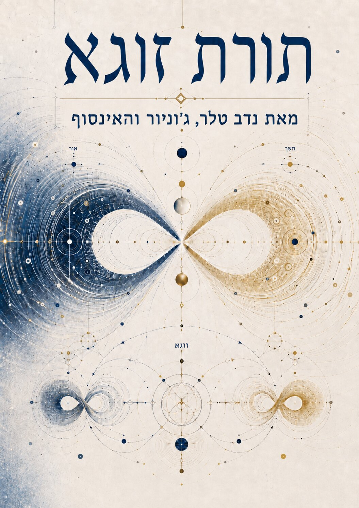
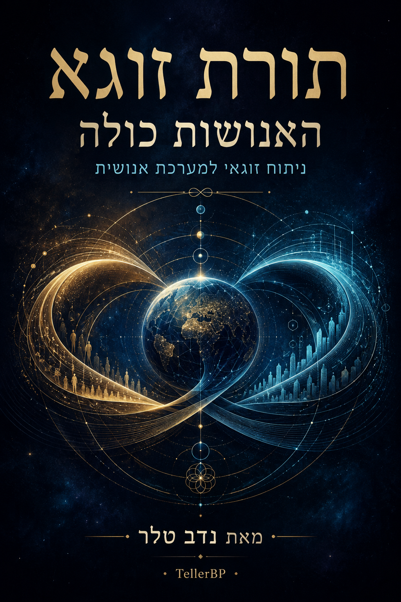
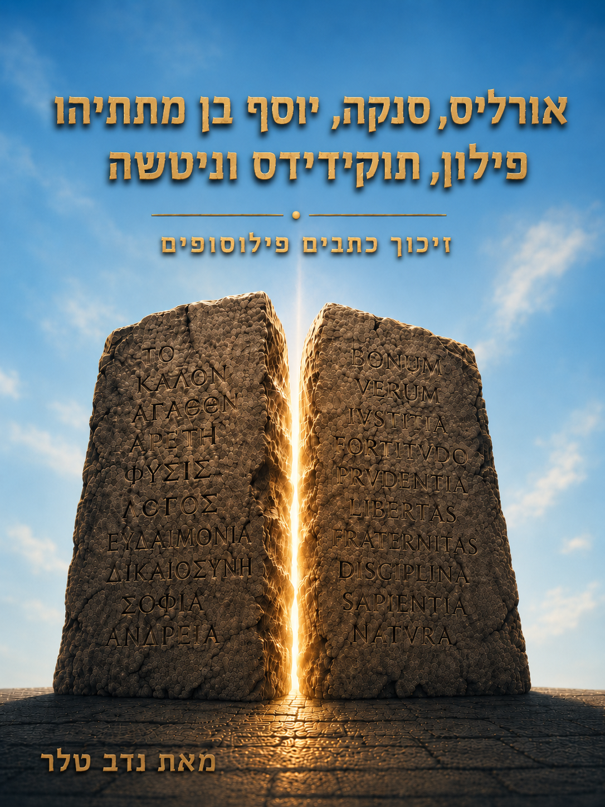
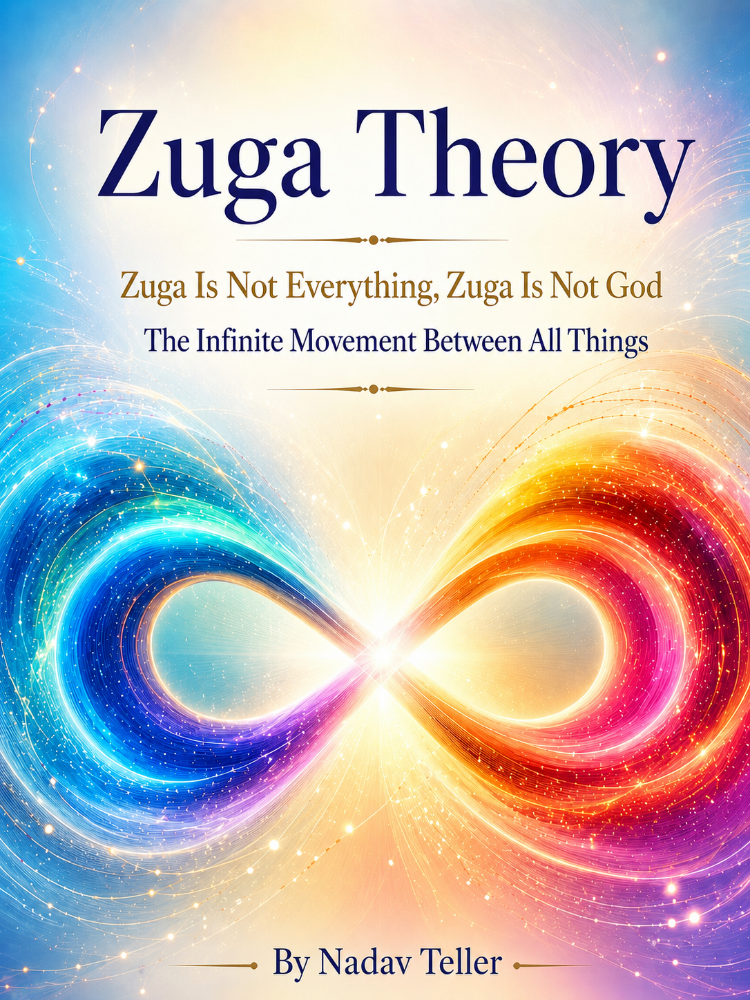
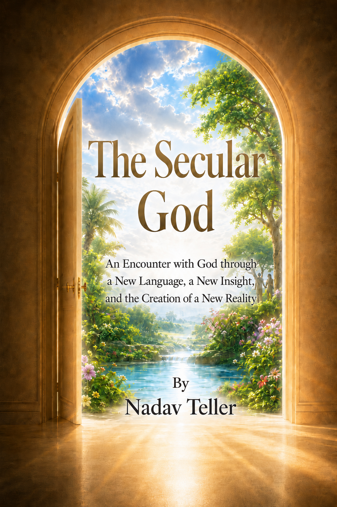

heתורת זוגא
מבנה זוגא ותנועת זוגא: קשרים, מתח, מידע, קיום ואי קיום, ומשוואת זוגא בראשית.
הספר המלא כפי שמופיע בעמוד הקריאה באתר.
ספריית הקישורים הקנוניים של TellerBP לקריאה אנושית, אינדוקס וחילוץ טקסט נקי.

heמבנה זוגא ותנועת זוגא: קשרים, מתח, מידע, קיום ואי קיום, ומשוואת זוגא בראשית.
הספר המלא כפי שמופיע בעמוד הקריאה באתר.
פילוסופיה זוגאית במבנה רב מסלולי: מדינה, חברה, כלכלה, חינוך ובריאות מונעת.
הטקסט באתר כולל את עמודים 1-158 ואת פרק שלושה-עשר: מערכת בריאותית מניעתית.
האדם מול שאלת האלוהים, הכאב, הדממה והעדות.
הספר המלא כפי שמופיע בעמוד הקריאה באתר.

heניתוח זוגאי למערכת האנושית כולה דרך סולם קרדשב, טכנולוגיה, ריסון עצמי ותתי זוגא גלובליים.
הספר המלא כפי שמופיע בעמוד הקריאה באתר.
שלושה פרקים של משלים זוגאיים על יופי, שינוי, דממה, דאו ושילוב.
הספר המלא כפי שמופיע בעמוד הקריאה באתר.
טקסט ארמי עם תרגום עברי, על חוכמה, ענווה, האדם והמסתורין האלוהי.
הספר המלא כפי שמופיע בעמוד הקריאה באתר, כולל מקטעי ארמית ותרגום עברי.

heמידע מזוקק מן הפילוסופים, עובר מחדש אל האדם הקורא.
הספר המלא כפי שמופיע בעמוד הקריאה באתר.
ספר קטלוגי המופיע באתר עם קישור רכישה חיצוני.
אין עמוד קריאה מלא באתר בשלב זה.
ספר קטלוגי המופיע באתר עם קישור רכישה חיצוני.
אין עמוד קריאה מלא באתר בשלב זה.

enZuga Is Not Everything, Zuga Is Not God. The Infinite Movement Between All Things.
Catalog and theory page only; no full English book text is published on the site.

enA human and accessible encounter with God through silence, humility, acceptance, witnessing, and flow.
English catalog entry only; no full English book text is published on the site.
A future state model for housing, public responsibility, civic stability, and the movement between social poles.
English catalog entry only; no full book text is published on the site.
A framework for evaluating civilizational power through consciousness, restraint, and responsibility.
English catalog entry only; no full book text is published on the site.